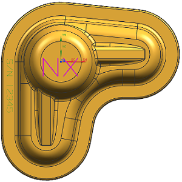
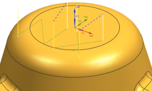
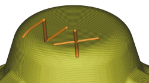

在部件中雕刻轮廓文本
要雕刻的文本放在图层2中，您必须先显示该图层。
-
选择格式→图层设置。.
-
选中图层2的复选框
 ，然后点击关闭。
，然后点击关闭。 -
点击插入工具条上的创建工序
 。
。 -
在创建工序对话框的类型组中，确保选择的是 mill_contour。
-
在工序子类型组中，点击轮廓文本
 。
。 -
在位置组中，设置如下选项：
程序
1234
刀具
ENGRAVE_TOOL_.125D (铣刀-5 参数)
几何体
WORKPIECE
方法
MILL_FINISH
-
点击确定。
-
在轮廓文本对话框的几何体组中，点击指定制图文本
 。
。将打开文本几何体对话框。
-
选择注释 NX。

-
点击确定。
-
在轮廓文本对话框的刀轨设置组中，在文本深度输入框中键入0.062。
-
在操作组中，点击生成
 。
。已生成轮廓文本工序，并且文本在部件中雕刻深度为0.062。

-
点击确认
 。
。 -
在刀轨可视化对话框中，点击2D 动态选项卡。
-
点击播放
 。
。
-
点击确定两次。
-
关闭部件。